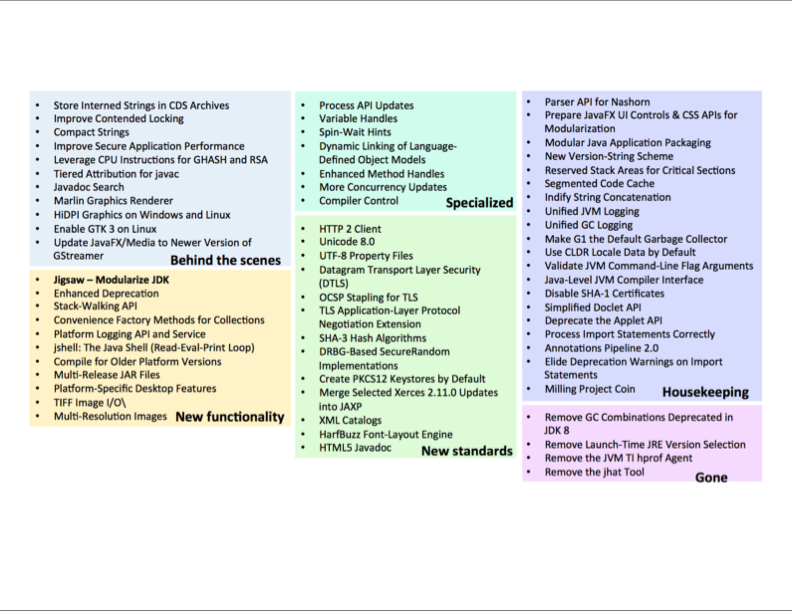

> ~ jshell
| Welcome to JShell -- Version 9-ea
| For an introduction type: /help intro
jshell> 3 + 4 * 7
$1 ==> 31
jshell> int add(int a, int b) {
...> return a+b;
...> }
| created method add(int,int)
jshell> add(25, $1)
$3 ==> 56Java 9 Features

By
Narendran Solai Sridharan
Features by Categories

Notable Categories
Tooling
API Enhancements
Important Under the hood Changes
New Standards
Tooling
Important New Tools
jshell
jdeps
jLink
jmod
jdeprscan
Tool Enhancements
javac
java
jar
javadoc
jlink
jshell
REPL - Read, Evaluate, Print and Loop
Java Artifacts
jmod
jlink & jimage
MR jar for Java library release management
API Enhancements
There are various small changes. Even if we don’t leverage JPMS, once we onboard Java 9, we can make use of these small enhancements immediately.
Collection Factories
/* Comment sections would break ... */
List<Integer> listOfNumbers = List.of(1, 2, 3, 4, 5
/*, null*/);
Set<Integer> setOfNumbers = Set.of(1, 2, 3, 4, 5/*, 1*/);
Map<String, String> mapOfString =
Map.of("key1", "value1", "key2", "value2");
Map<String, String> moreMapOfString =
Map.ofEntries(
Map.entry("key1", "value1"),
Map.entry("key2", "value2")/*,
Map.entry("key1", "value3")*/
);Stream Enhancements
Try with Resource
Diamond Operator
Reactive Programming Flow API
Deprecated Annotation Enhancement
Important Under the hood Changes
Compact String
Default GC Collector G1
New Standards
HTTP API
/**
* The HTTP API functions asynchronously
* and synchronously. In
* asynchronous mode,
* work is done in threads (ExecutorService).
*/
public static void main(String[] args) throws Exception {
HttpClient.getDefault()
.request(URI.create("https://www.exxcellent.de"))
.GET()
.responseAsync() // CompletableFuture :D
.thenAccept(httpResponse ->
out.println(httpResponse
.body(HttpResponse.asString()))
);
Thread.sleep(999); // Give worker thread some time.
}